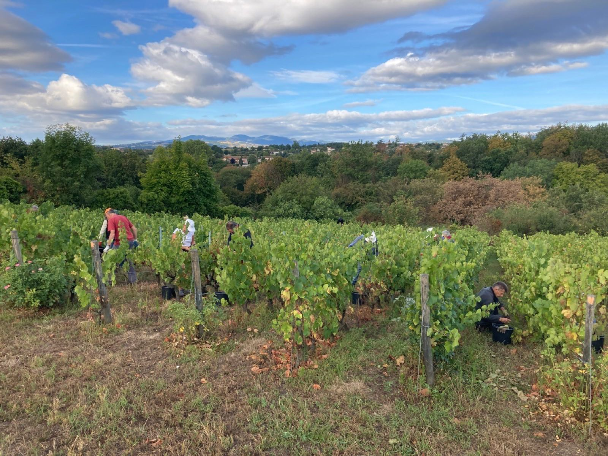
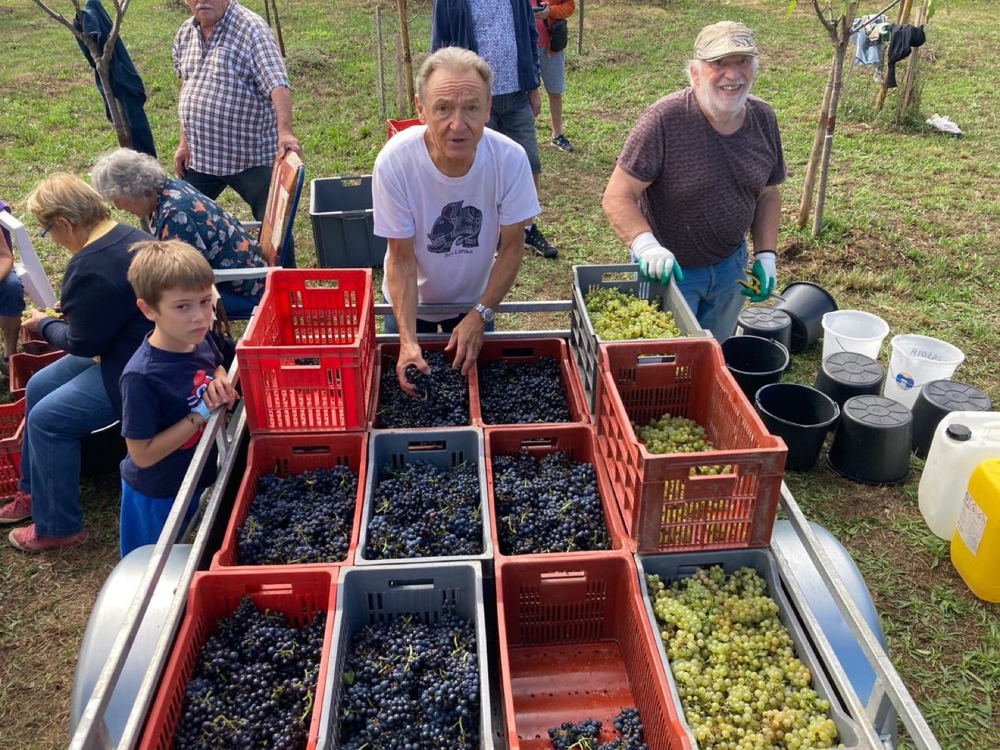
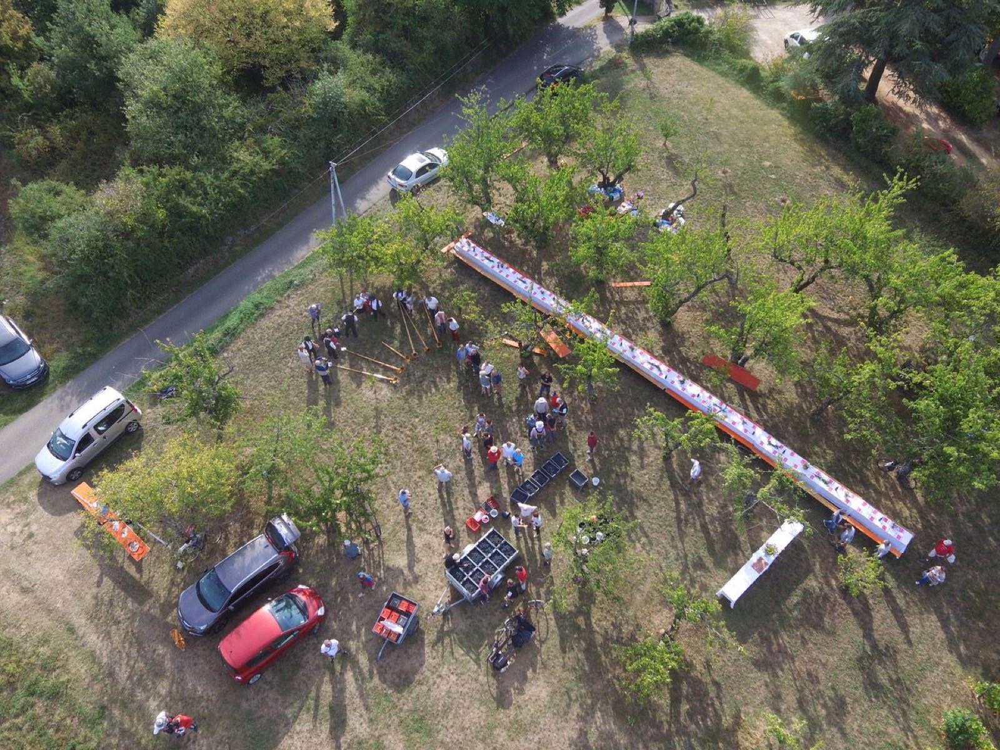
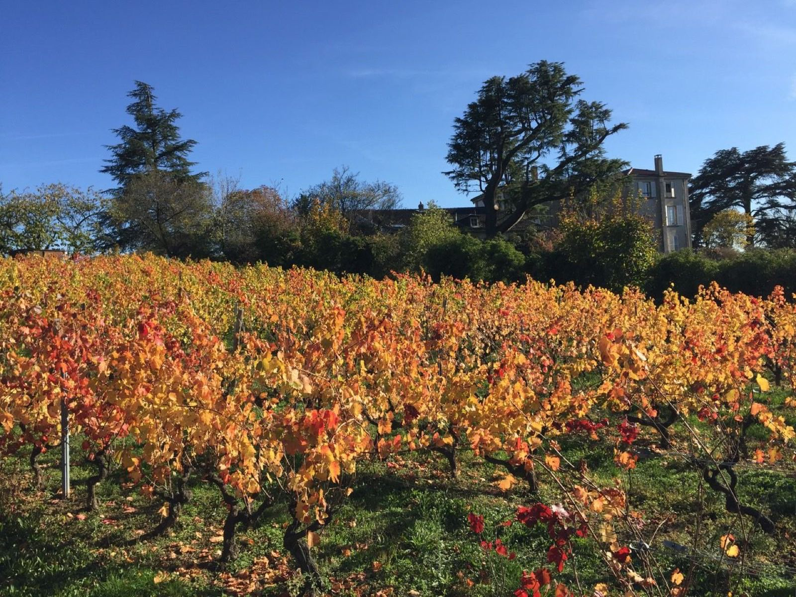
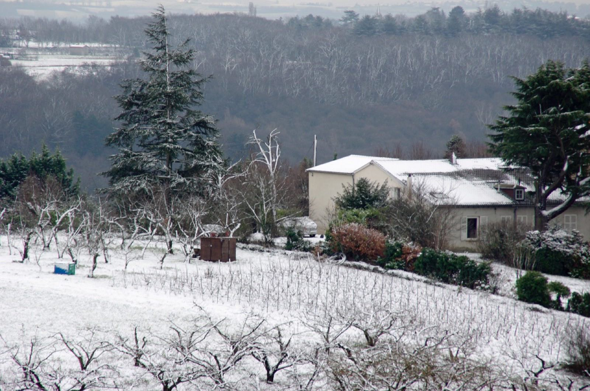
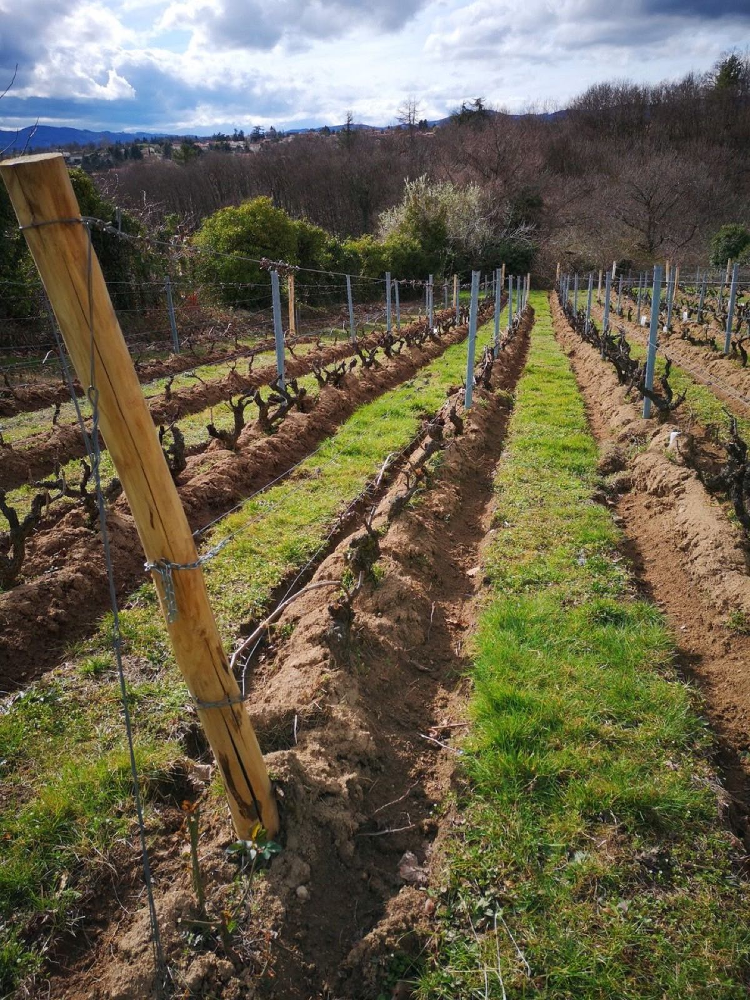
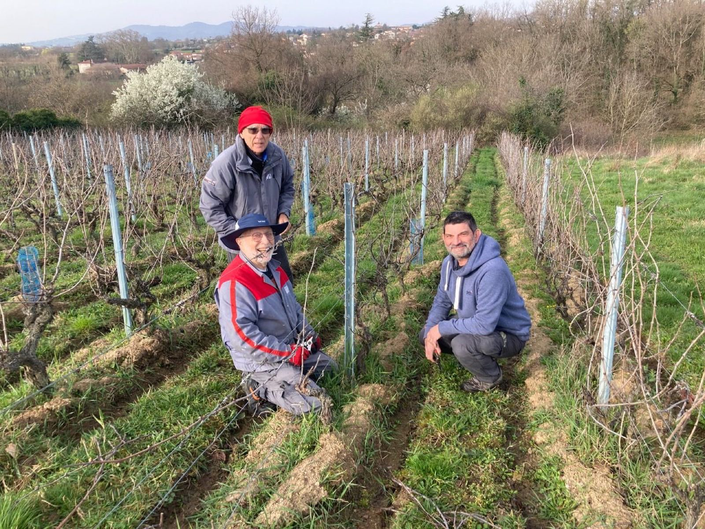
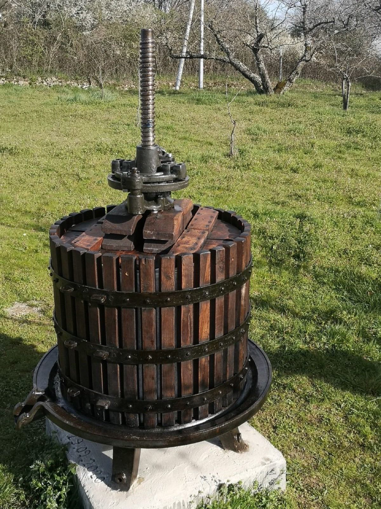
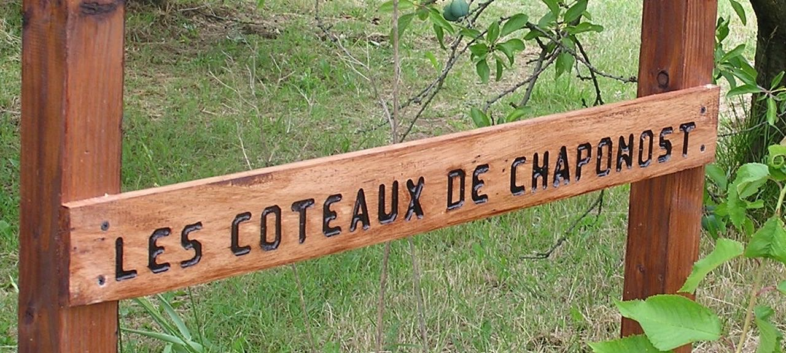

Photos & vidéos
La vigne en images
Travaux, vendanges, festivités, événements.
Photos et vidéo transmises par l'association (aperçu, non définitif). Cet espace accueillera la suite : chaque saison, chaque vendange.


VendangesVendanges dans la parcelle

VendangesLes caisses de raisin, noir et blanc

ÉvénementsRepas en plein air, vue du ciel FestivitésDéjeuner entre adhérents
FestivitésDéjeuner entre adhérents

TravauxLa vigne en automne

TravauxLa parcelle sous la neige

TravauxLes rangs au printemps

TravauxTaille de la vigne

TravauxLe pressoir ancien FestivitésPréparation des confitures, en commun
FestivitésPréparation des confitures, en commun TravauxCerises du verger
TravauxCerises du verger

ÉvénementsLe panneau de l'associationVidéos
Les vignes en mouvement
Une première vidéo en ligne ; la taille, les vendanges, le pressage et le banquet suivront.
La petite histoire du vin
Vendanges — vidéo à venir
Banquet annuel — vidéo à venir